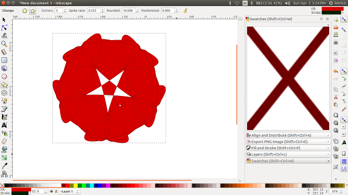

Inkscape is a GUI editor for Scalable Vector Graphics (SVG) format drawing files, with capabilities similar to Adobe Illustrator, CorelDraw, Xara Xtreme, etc. Inkscape features include versatile shapes, bezier paths, freehand drawing, multi-line text, text on path, alpha blending, arbitrary affine transforms, gradient and pattern fills, node editing, many export and import formats including PNG and PDF, grouping, layers, live clones, and a lot more. The interface is designed to be comfortable and efficient for skilled users, while remaining conformant to GNOME standards so that users familiar with other GNOME applications can learn its interface rapidly.
Inkscape in ubuntu 16.04SVG is a W3C standard XML format for 2D vector drawing. It allows defining objects in the drawing using points, paths, and primitive shapes. Colors, fonts, stroke width, and so forth are specified as `style' attributes to these objects. The intent is that since SVG is a standard, and since its files are text/xml, it will be possible to use SVG files in a sizeable number of programs and for a wide range of uses.
Inkscape uses SVG as its native document format, and has the goal of becoming the most fully compliant drawing program for SVG files available in the Open Source community.